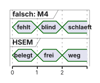
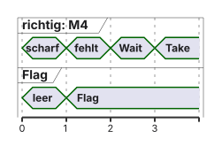
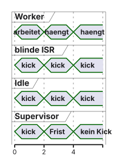
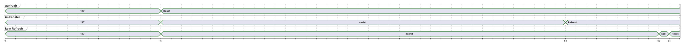

Dieselbe Kennung noch einmal: Rückleseprüfung kann HAL_OK liefern
Das ist kein Rekursionszähler und kein lokaler Taskbesitz
Aufruf
Ergebnis
Bedeutung
fremder Besitzer
HAL_ERROR
nicht bekommen
frei, passende ID
HAL_OK
neuer Besitz
selber Besitzer, noch einmal
oft HAL_OK
derselbe Besitz, nicht plus eins
ein Release
frei
kein „decrement“
Der öffentlich geprüfte STM32H7-HAL-Referenztreiber zeigt die Rückleseprüfung. Im Repo liegt dieser Treiber nicht. Die Cube-Version bleibt offen.
Atomarität auf Silizium-Ebene
Take erfolgreich
Barriere, dann Nutzdaten
Barriere, dann Release
Sichtbarkeit bleibt der Vertrag aus VL6
DMB ordnet Zugriffe. Clean schreibt eine schmutzige Zeile zurück. Die Basisregion ist nicht cachebar. Beides nicht verwechseln.
Die HAL-API für HSEM
Lehrbeispiel, ungebaut. Ein Worker, ID 1 frei, Region nicht cachebar.
if(HAL_HSEM_Take(1,0x37u)== HAL_OK){ __DMB(); shared_count +=1u; __DMB(); HAL_HSEM_Release(1,0x37u);}else{/* kein Besitz, Zaehler nicht anfassen */}
shared_count ist ein ausgerichtetes uint32_t im Shared-Block, einmal vor beiden Workern auf 0 gesetzt. Im Abschnitt kein Delay und kein printf.
Flowchart: HSEM Take
%%{init: {'theme': 'base', 'themeVariables': {'background': '#FFFFFF', 'primaryColor': '#FFFFFF', 'primaryBorderColor': '#E5E5EA', 'primaryTextColor': '#1D1D1F', 'lineColor': '#86868B'}}}%%
flowchart TD
T["Take"] --> Q{"HAL_OK?"}
Q -->|ja| W["Zugriff, Barriere, Release"]
Q -->|nein| N["kein Zugriff"]
N --> R["erneut nehmen oder speichernd warten"]
R --> T
Ein dritter Teilnehmer kann nach einer Freigabe zuerst gewinnen. HAL_ERROR ist kein Fault.
Warten auf den HSEM: Polling vs. Interrupts
Falsch: Take scheitert, der andere gibt frei, erst dann wird die Notification scharf, danach wird unendlich gewartet. Die Freigabe ist weg.
Richtig, ein wartender M4-Task, speicherndes Thread-Flag, eine Gesamtdeadline:
Handle gültig, alte Ereignisse der eigenen ID klären
Notification der Maske 1u << 1 aktivieren
Take erneut
Erfolg: Notification aus, kurz arbeiten
Fehler: Flag nicht löschen, mit Restzeit warten
Nach dem Wecken erneut scharf und erneut Take
Timeout: aufräumen, nicht anfassen
HSEM Interrupts: M7 weckt M4-Task
Abbildung C. Oben geht die Freigabe verloren. Unten liegt sie im Flag, bevor gewartet wird.


Lehrhinweis, ungebaut: Callback setzt das Flag des vorher gültigen Handles. Keine RTOS-Blockierung in der ISR. NVIC-Priorität auf der erlaubten Seite der Syscall-Grenze. Niedrigere Zahl ist höhere Dringlichkeit.
Multicore Deadlock-Gefahr
Zwei Ressourcen, zwei Kerne, entgegengesetzte Reihenfolge.
%%{init: {'theme': 'base', 'themeVariables': {'background': '#FFFFFF', 'primaryColor': '#FFFFFF', 'primaryBorderColor': '#E5E5EA', 'primaryTextColor': '#1D1D1F', 'lineColor': '#86868B'}}}%%
flowchart LR
M7["M7 haelt ID 1"] --> W2["M7 will ID 2"]
M4["M4 haelt ID 2"] --> W1["M4 will ID 1"]
W2 --> M4
W1 --> M7
Globale Ordnung, zum Beispiel immer ID 1 vor ID 2, und lokale Mutexes in derselben Ordnung. Timeout ohne Freigabe der eigenen Schlösser beendet den Zyklus nicht.
Recovery: Schlossfreigabe repariert keine Daten
HAL_HSEM_ReleaseAll gibt mit einem Key alle vom genannten Kern gehaltenen HSEM frei. Das ist kein normales Release einer ID und kein kryptografischer Nachweis.
Abbildung D. Verdacht ist kein Beweis, dass CPU, ISR und DMA aufgehört haben zu schreiben.
%%{init: {'theme': 'base', 'themeVariables': {'background': '#FFFFFF', 'primaryColor': '#FFFFFF', 'primaryBorderColor': '#E5E5EA', 'primaryTextColor': '#1D1D1F', 'lineColor': '#86868B'}}}%%
flowchart LR
V["Heartbeat fehlt"] --> U["Besitzer vielleicht aktiv"]
U --> X["Shared-Block vielleicht halb"]
X --> S["Lehrpfad: System-Reset"]
S --> I["neu initialisieren, Handshake"]
Kein „Timeout, ReleaseAll, weiterzählen“.
Zusammenfassung Hardware-Semaphoren
Lokal serialisieren, dann Inter-Core-Besitz nehmen
Sichtbarkeit aus VL6, kurz arbeiten, passend freigeben
Warten nur mit gespeichertem Ereignis und erneutem Take
ReleaseAll ist Recovery, nicht der Ping-Pong
Frage: Warum ist eine Notification kein Besitz? Weil danach Take verlieren kann. Frage: Warum ersetzt die ProcessID keinen Task-Mutex? Weil dieselbe Kennung zwei Tasks nicht trennt.
Was ist „Safety“ in Embedded Systems?
Safety ist der Schutz vor unvertretbaren Folgen einer Fehlfunktion. Security, der Schutz vor absichtlichem Missbrauch, ist ein anderes Ziel und hier nicht das Thema.
Ein Lehrbeispiel, keine Anlage: ein Ausgang muss innerhalb einer genannten Frist einen definierten Pegel annehmen. Ob das 10 ms oder 1 s sind, legt die Anwendung fest. Dieselben Zahlen sind hier nur Platzhalter.
100 ist 0x0064. Bit 15 gesetzt ergibt 0x8064 = 32868, nicht 65535 und nicht die Umkehrung aller Bits.
Ursachen für System-Crashes
Fehler
Watchdog sieht ihn?
CPU-Hog, niemand füttert
ja, die Frist läuft ab
Worker tot, Idle füttert
oft nein
Ergebnis falsch, Takt stimmt
nein
anderer Kern tot, dieser füttert
nein
Drei Sätze bleiben getrennt: der Handler läuft, die Runde ist abgeschlossen, das Ergebnis ist richtig.
Das Konzept des Hardware-Watchdogs
Der Zähler läuft abwärts. Refresh setzt ihn in den erlaubten Bereich zurück. Ohne rechtzeitigen Refresh folgt ein Reset.
Auf dem STM32H755 sind IWDG1, IWDG2, WWDG1 und WWDG2 dokumentierte Quellen eines System-Resets. Das steht in RM0399, Rev. 5, bei den RCC-Resetursachen. RCC ist Reset and Clock Control.
System-Reset löscht nicht jeden Backup- und Debug-Zustand. Die Resetflags sichern, bevor Boot oder HAL sie löschen.
Abbildung E, Taktpfade. Der Resetpfeil ist der System-Reset, nicht eine offene Kernfrage.
Kick oder Refresh heißt: den Watchdogzähler in den erlaubten Bereich zurücksetzen. Im Entwurf nur nach einem abgeschlossenen, noch frischen Nachweis.
Nicht „niemals in der ISR“. Eine ISR, die immer füttert, verdeckt einen Hänger. Eine ISR darf füttern, wenn sie die Gesundheitsbedingung wirklich geprüft hat und die API dort erlaubt ist.
Unterschiedliche Workerperioden brauchen eigene Fristen. Ein gemeinsamer Haken „beide neu seit der letzten Abfrage“ ist ein engeres Modell.
Watchdog Typ 1: Independent Watchdog (IWDG)
\[t_{\mathrm{nom}} = (R + 1) \times P / f_{\mathrm{LSI}}\]
Die Zahlengrenzen stehen im Datenblatt zur Temperatur und Versorgung. DS12919 Rev. 3 trennt unter anderem eine 25-°C-Zeile von breiteren Bereichen. Ein Raumtemperaturwert ist kein Worst Case. Im Hauptbeispiel bleibt das Fenster des IWDG aus. Die Familie kann ein Fenster. Das ist ein getrenntes Beispiel.
Der Vorteil des LSI
Der IWDG hängt nicht am HSE, High-Speed External, dem externen schnellen Takt. Ein Ausfall dieses Takts ist nicht automatisch ein Ausfall der Versorgung oder des LSI.
Clock-Security und Fallback können den CPU-Takt auf eine andere Quelle legen. Ob das konfiguriert ist, steht im Projekt. Gemeinsame Fehler, zum Beispiel die Versorgung, treffen LSI und Kern zusammen. „Unabhängig“ heißt hier: anderer Taktpfad, nicht universelle Rettung.
Konfiguration des IWDG
Reihenfolge als Lehrfolge, Symbole am Header der vorhandenen HAL prüfen:
Instanz wählen, LSI verfügbar
Prescaler und Reload schreiben
Fenster für dieses Beispiel aus
Start, auf die Übernahmebits warten, dann Refresh
Debug-Freeze bewusst an oder aus
RCC-Resetursache lesen, bevor sie gelöscht wird
Rückgabe prüfen. Ein stiller Fehler beim Start ist kein laufender Hund.
Die Gefahr im RTOS: Wo füttern wir?
Dieselbe hängende Worker-Runde, drei Policies. Abbildung F.

Ein Watchdog-Task, der nur existiert, genügt nicht. Er muss die Nachweise sehen und selbst rechtzeitig laufen.
Anti-Pattern: Füttern im Timer-Interrupt
void TIM_IRQ(void){ kick();/* auch wenn der Worker steht */}
Der Handler beweist, dass dieser IRQ bedient wird. Er beweist nicht, dass eine Anwendungsschleife eine Runde beendet hat.
Begrenzt: Füttern in der Idle-Task
Idle-Ausführung zeigt: dieser lokale Pfad bekommt CPU-Zeit. Sie zeigt keinen neuen Scheduler-Tick und keinen Workerfortschritt.
Zwei Tasks können aufeinander warten. Idle läuft weiter und würde weiter füttern. Tickless Idle kann sogar ohne periodischen Tick in diesen Pfad kommen. Ein Idle-Hook darf nicht blockierend aufrufen.
Supervisor mit Fortschrittsfristen
Gegenbeispiel, Kohorte, Start seen = 0. Unbedingt nach der Prüfung zu speichern, verbraucht Fortschritt:
Abfrage A: e4 = 1, e7 = 0. Gemeinsam nicht frisch.
Setzt A trotzdem seen4 = 1, wirkt Abfrage B mit e4 = 1, e7 = 1 wie „M4 ohne neuen Schritt“.
Richtig im Kohortenmodell: seen erst nach akzeptiertem gemeinsamen Nachweis nachziehen. Das ist die Vereinfachung „beide neu seit dem letzten Erfolg“.
Hauptmodell bei verschiedenen Perioden: jeder Worker hat einen eigenen Zähler und eine eigene Frischefrist. Ein einmal unveränderter Zähler in einer schnellen Abfrage ist noch kein Fehler.
Fristenbeispiel, zu Folie Supervisor
Lehrpseudocode, ungebaut. Ein Schreiber je Zähler. now ist die lokale Zeit des Supervisors.
Refresh nur, wenn jeder nötige Worker so frisch ist und das Hardwarefenster offen ist. Sonst Fehler verriegeln und nicht füttern.
Die Schwäche des IWDG
Hauptfall dieser Vorlesung: IWDG mit ausgeschaltetem Fenster. Eine Schleife, die alle paar Millisekunden füttert, hält den Zähler am Leben, auch wenn die eigentliche Arbeit nur noch aus dem Füttern besteht.
Eine konfigurierte IWDG-Fensterfunktion kann frühes Füttern zusätzlich ablehnen. Das ist ein anderer Betriebszustand, keine Eigenschaft jedes IWDG-Bausteins.
Der Vergleich mit dem WWDG braucht dessen Takt, Fenster und die gewünschte Reaktionszeit. Beides gleichzeitig „strenger“ zu nennen, ohne diese Zahlen, ist leer.
Typ 2: Window Watchdog (WWDG) Einführung
WWDG1 an APB3 in D1. WWDG2 an APB1 in D2. Das M4-Lehrteil benutzt WWDG2.
\[t_{\mathrm{tick}} = 4096 \times P / f_{\mathrm{PCLK}}\]
Lehrannahme, kein Messwert: \(f_{\mathrm{PCLK}} = 100\,\mathrm{MHz}\), \(P = 8\). \(P\) ist der Teiler, nicht der Zahlenwert eines HAL-Makros.
Bei 50 MHz: 0,65536 ms. Nicht 200 MHz. Die zulässige APB-Grenze hängt von Bauteil und VOS ab. VOS ist der Spannungs- und Leistungsmodus.
Das Fenster-Konzept (Window Watchdog)
Lehrkonfiguration, überall dieselbe: WWDG2, Teiler 8, \(T\) startet bei 127 = 0x7F, Fenster \(W = 80\) = 0x50, EWI bei \(T = 64\) = 0x40, Reset beim Übergang nach \(T = 63\) = 0x3F.
Erlaubt vor dem Refresh: der Zähler ist größer als 0x3F und höchstens gleich \(W\). Bei \(T = 80\) ist die obere Grenze erreicht und der Refresh erlaubt, nicht „noch zu früh“.
Idealisiert, erster Schritt einen vollen Tick nach dem Nachladen. Der frei laufende Teiler kann den ersten Schritt früher auslösen. Das Band ist bis zu etwa ein Tick.
Schritt
T
t ideal
0
127
0 ms
47
80
15,401 ms
48
79
15,729 ms
54
73
17,695 ms
63
64
20,644 ms
64
63
20,972 ms
5 ms: zu früh. 18 ms: nominal \(T = 73\), praktisch PCLK, Tick und Pfad prüfen. 25 ms ohne Refresh: der Reset liegt vorher, wenn der Hund läuft und nicht einfriert. osDelay(n) sind n Kernel-Ticks, nicht n ms.
Visualisierung des WWDG-Fensters
Abbildung G. Einheit: Zählschritte der Lehrkonfiguration. Millisekunden nur mit \(0{,}32768\,\mathrm{ms}\) und der Phasenannahme. Kein EWI vor dem frühen Reset.

Gleichheit \(T = 80\) bei Schritt 47 ist erlaubt. Der frühe Reset im ersten Streifen liegt davor, ohne EWI.
IWDG und WWDG im Doppelpack
Getrennte Takte und verschiedene Zeitbedingungen. Keine automatisch unabhängige Sicherheitsarchitektur.
Beide können einen System-Reset auslösen. Die RCC-Flags und der Debug-Freeze sind je Instanz zu sichern, sonst erklärt der Reset den falschen Hund.
Ein Supervisor kann beide falsch informieren. Im Labor zuerst eine Instanz, die andere ausdrücklich aus oder unbenutzt. Die Kombination ist optional und erst danach.
Warum WWDG? (Fehlerhafte Ausführung)
Eine Schleife, die sofort wieder füttert, scheitert am Fenster und bestünde einen reinen Timeout.
Eine Schleife, die nach einer festen Wartezeit im Fenster füttert, besteht den WWDG und kann fachlich falsch sein. Ein übersprungener Rechenschritt löst keinen frühen Refresh aus, wenn danach dieselbe Pause kommt.
Der Fensterwächter ist ein zeitlicher Plausibilitätsmechanismus. Er ist kein Beweis des Kontrollflusses und kein Beweis des Ergebnisses. Dafür bleiben die Fortschritts- und Plausibilitätsprüfungen zuständig.
Das Sicherheitsnetz: EWI
EWI, Early Wakeup Interrupt, ist ein gewöhnlicher maskierbarer IRQ, kein NMI. NMI, Non-Maskable Interrupt, wäre nicht auf diesem Weg abschaltbar.
Bei der Lehrkonfiguration liegen zwischen \(T = 64\) und \(T = 63\) nominal \(0{,}32768\,\mathrm{ms}\), also 327,68 µs. Davon gehen Eintritt, bereits verstrichene Phasenzeit und die Befehle ab. Das Softwarebudget ist kleiner. Eine gemessene Worst-Case-Latenz haben wir nicht.
Zu früher Refresh setzt zurück, ohne EWI. Ein maskierter IRQ, eine ungeeignete Priorität oder ein blockierter Handler kann den Callback verhindern. Im Resetversuch bei \(T = 0x40\) nicht erneut füttern.
Nutzen des EWI (Safe Shutdown)
Lehrpolicy für das Reset-Experiment: Ursache merken, kurzen GPIO-Marker setzen, nicht erneut füttern, Reset zulassen.
Ein sicherer Anlagenzustand braucht eine definierte Anwendung, einen Sollpegel und eine maximale Reaktionszeit. Die haben wir hier nicht. Eine LED oder ein GPIO zeigt, dass der Callback lief. Sie ist kein Sicherheitsnachweis.
Pins können beim Reset hochohmig oder analog werden. Externe Pull-Widerstände und die Boot-Freigabe müssen den gewünschten Ruhepegel tragen. „Ausgänge auf Reset-Pegel“ ohne Schaltung ist keine Anweisung.
HAL-API für den WWDG
Lehrfolge, ungebaut. Der Init des Referenztreibers kann den Zähler bereits starten. Die erste erlaubte Refreshzeit liegt dann im Fenster, nicht bei \(T = 127\).
Takt der Instanz an, WWDG2 für den M4-Teil
Prescaler-Teiler 8, Window 80, Reload 127, EWI an
NVIC und den Handler dieser Instanz, nicht einen erfundenen Namen
Callback ohne RTOS, im Resetversuch ohne Refresh
GPIO-Marker direkt am Vorgang, den wir meinen
Rückgabewert prüfen. Debug-Freeze notieren.
Zusammenfassung: Watchdogs
501 ms sind der IWDG-Nennwert bei 32 kHz, Reload 500, Teiler 32, Fenster aus
Füttern ist erlaubt, nachdem der Entwurf einen frischen Nachweis hat
Die Hardware prüft diese Bedeutung nicht
EWI ist ein maskierbarer Schritt vor dem späten Reset, nicht vor dem frühen
Frage: Warum übersieht Idle einen Deadlock der Worker? Weil Idle weiterläuft. Frage: Warum kann der Reset ohne EWI kommen? Weil zu frühes Füttern nicht auf \(T = 64\) wartet.
Speicherschutz: Die MPU (Erinnerung)
Die MPU prüft konfigurierte Regionen des Kerns, der sie trägt. Sie kennt keine C-Arraylänge.
Abbildung I. Das Array liegt in einer größeren erlaubten Region. Ein Zugriff hinter dem Array, aber in der Region, bleibt erlaubt. Erst die No-Access-Region verletzt das Recht.
%%{init: {'theme': 'base', 'themeVariables': {'background': '#FFFFFF', 'primaryColor': '#FFFFFF', 'primaryBorderColor': '#E5E5EA', 'primaryTextColor': '#1D1D1F', 'lineColor': '#86868B'}}}%%
flowchart LR
A["Array, erlaubt"] --> R["dieselbe Region, hinter dem Array"]
R --> N["No-Access, Fault"]
Cache-Attribute aus VL6 sind kein Zugriffsschutz. DMA und der andere Kern brauchen eigene Maßnahmen.
Der primäre Zweck der MPU
Kette: verbotener CPU-Zugriff, MemManage, wenn die Exception freigegeben ist und nicht eskaliert, sonst HardFault.
Das ist kein Halt in einer festen Nanosekunde und kein sicherer Stillstand. Exception-Stacking kann scheitern, wenn der Stack schon zerstört ist. Ausgangsreaktion und Wiederanlauf sind zusätzliche Maßnahmen.
Use-Case 1: Null-Pointer-Protection
NULL in C ist ein Nullzeiger. Ihn zu dereferenzieren ist undefiniertes Verhalten, kein portabler Test.
Ein uninitialisierter Zeiger ist nicht automatisch NULL. Adresse 0 kann auf dem H755 eine Abbildung von ITCM oder Boot sein. ITCM ist Instruction Tightly Coupled Memory. Wir raten diese Abbildung nicht.
Reproduzierbarer Test: eine dokumentierte Adresse in einer No-Access-Region, Disassembly und Faultstatus prüfen. Eine erlaubende Region mit höherer Nummer schluckt den Zugriff.
Use-Case 2: Stack-Overflow Erkennung
Der Stack wächst zu kleineren Adressen. Eine Guard liegt unterhalb, ausgerichtet, mit No-Access. Ein Sprung über sie oder ein Überlauf in eine erlaubte Nachbarregion bleibt unsichtbar.
Abbildung J, Zugriffsmatrix bei aktiver passender No-Access-Region:
Zugriff
durch diese Guard?
unprivilegierter Thread
ja
privilegierter Thread
ja
gewöhnlicher Handler
ja
HardFault, NMI, FAULTMASK
nur mit HFNMIENA
DMA
nein
anderer Kern
nein
Der gewöhnliche FreeRTOS-CM4-Port legt nicht je Task eine Guard an. Eine feste Guard kann man trotzdem von Hand setzen. Dynamisch je Task braucht den MPU-Port oder eine eigene Umschaltung.
Privileged vs. User Mode
Modus
Privileg
MPU-Region
Thread, unprivilegiert
nein
aktive Region gilt
Thread, privilegiert
ja
aktive Region gilt
Handler
ja, gewöhnlich
aktive Region gilt
PRIVDEFENA füllt nur die Lücken ohne Region. Ein Task-Fault lässt den Rest nicht automatisch gesund weiterlaufen. Das wäre Recovery und ist hier nicht gebaut.
Zusammenfassung MPU & Safety
Die MPU prüft Regionen eines Kerns, nicht C-Längen
Ein Fault ist eine Exception, kein sicherer Zustand
DMA und der andere Kern brauchen eigene Maßnahmen
HSEM, Watchdog und MPU beantworten drei verschiedene Fragen
Frage: Warum ist die Notification kein Besitz? Weil Take danach neu entscheiden muss. Frage: Warum übersieht Idle blockierte Tasks? Weil Idle selbst läuft. Frage: Warum erzeugt ein Überlauf in einer erlaubten Region keinen Fault? Weil die Region den Zugriff erlaubt.
Laborvorbereitung: Multicore-Safety
Drei Versuche: Zähler, ein Watchdog, EWI und MPU. Nicht gleichzeitig alles einschalten.
Punkt
Lehrannahme
im Projekt prüfen
Board
nur NUCLEO-H755ZI-Q, wenn es das ist
Aufdruck
HSEM Boot
ID 0, wenn das Template sie nutzt
Startup
HSEM Zähler
ID 1, wenn frei
Belegung
Shared
ipc-Bereich, nicht cachebar
Map, MPU
ProcessID
M7 0x37, M4 0x34
ein Worker je Kern
WWDG
WWDG2, PCLK-Annahme 100 MHz
Taktbaum
Resetflags
früh lesen
vor HAL-Löschen
Abbildung K. Besitz und Veröffentlichung sind verschiedene Pfeile.
%%{init: {'theme': 'base', 'themeVariables': {'background': '#FFFFFF', 'primaryColor': '#FFFFFF', 'primaryBorderColor': '#E5E5EA', 'primaryTextColor': '#1D1D1F', 'lineColor': '#86868B'}}}%%
flowchart LR
M7["M7-Worker"] --> H["HSEM ID 1"]
M4["M4-Worker"] --> H
H --> C["shared_count"]
M7 --> D7["done_m7, nur M7"]
M4 --> D4["done_m4, nur M4"]
B["HSEM ID 0 Boot"] --- M4
Zähler einmal auf 0, bevor beide starten. Endliches \(N\) mit \(2N\) in uint32_t. Ein ungeschützter Lauf, der \(2N\) trifft, beweist keine Racefreiheit.
Schritt 2: Der asynchrone Multicore-Zugriff
Lehrcode, ungebaut. Nur erfolgreiche Inkremente zählen. Ein Fehlschlag ist kein Schritt.
Der M4 tut dasselbe mit 0x34, osKernelGetTickCount und osDelay(1) außerhalb des Schlosses. 2000 Kernel-Ticks sind nicht generell 2 s. Die HAL-Zeitbasis des M7 ist eine andere Uhr. Das Gesamtbudget muss zu \(N\) und den Wartezeiten passen.
Gelesen wird shared_count erst, wenn beide Done-Felder den Erfolg melden und die Deadline hält. Sonst ist der Versuch ungültig.
Schritt 3: Den WWDG integrieren
Tabelle zuerst, Delays danach. Lehrannahme, bis der Taktbaum steht:
Größe
Wert
Instanz
WWDG2
PCLK
100 MHz, Annahme
Teiler
8, nicht das HAL-Makro als Zahl
Reload, Window
127, 80
EWI, Reset
64, Übergang nach 63
Tick
0,32768 ms, Idealphase
Clock, Init, NVIC, Handler der Instanz, Callback. Debug-Freeze und frühe Resetflags dokumentieren. Andere Watchdogs in diesem Versuch aus oder als unbenutzt eintragen. Alte feste Delays aus einer anderen Anleitung nicht übernehmen.
Schritt 4: Den Wachhund füttern & Crashen
Abbildung L. Analytische Erwartung. Beobachtung bleibt leer, bis ein Lauf sie füllt. Kein erfundener Messwert.
Fall
Erwartung
Resetursache
Zeit
Deutung
Refresh zu früh
Reset, kein EWI nötig
offen
offen
offen
Refresh im Fenster
kein Reset durch diesen Kick
offen
offen
offen
kein Refresh
EWI nur wenn IRQ läuft, dann Reset
offen
offen
offen
CPU-Hog, niemand füttert
Reset
offen
offen
offen
Idle füttert, Worker blockiert
Hund kann schweigen
offen
offen
Policy zu schwach
Frist abgelaufen
kein weiterer normaler Kick
offen
offen
offen
Marker am GPIO direkt am Refresh. Die LED ist kein Mikrosekundenmaß.
Schritt 5: Den Safe-Shutdown implementieren
EWI-Policy des Resetversuchs: kurzer Marker, nicht erneut füttern, Reset zulassen. Kein Flash, kein printf, kein Delay. Keine RTOS-API in diesem priorisierten Pfad.
Pinverhalten beim Reset nicht mit einem aktiven Ausgang vor dem Reset verwechseln. Die LED zeigt den Callback, nicht einen sicheren Anlagenzustand.
MPU-Versuch getrennt: No-Access-Region, dokumentierte Adresse, Regionsnummer, Privileg, Disassembly, Faultstatus. Kein *NULL als Beweis. Keine erfundene Task-Recovery. Die maximale Reaktionszeit ist eine Anforderung, kein automatisches Ergebnis des EWI.
Die Essenz des Tages
Ein lokaler Mutex und __disable_irq schließen den anderen Kern nicht aus
HSEM entscheidet den Besitz. Sichtbarkeit bleibt VL6. Notification ist kein Besitz
501 ms sind der IWDG-Nennwert. Das WWDG-Fenster gilt für Reload 127 und Window 80
\(T = 80\) ist erlaubt. EWI bei 64, Reset beim Schritt nach 63
Die MPU prüft Regionen eines Kerns, auch für gewöhnliche privilegierte Handler
Das Labor demonstriert. Im Repo gibt es keinen Hardwarelauf
Glossar und offene Punkte, zu Folie 51
Nachschlagehilfe. Die lokale Erklärung auf der jeweiligen Folie bleibt maßgeblich.
Kurz
Rolle hier
HSEM
Hardware-Schloss, ID 0 Boot, ID 1 Zähler
ProcessID
8-Bit-Kennung, 0x37 und 0x34
DMB
ordnet Speicherzugriffe, reinigt keinen Cache
IWDG / WWDG
LSI-Timeout und APB-Fenster, beide System-Reset
EWI
maskierbarer IRQ bei \(T = 64\)
MPU
Regionen eines Kerns, kein DMA, kein fremder Kern
LSI / PCLK
32 kHz Nennwert, 100 MHz Lehrannahme
Offen: Boardrevision, HAL-Stand, Taktbaum, Tickfrequenz, freie HSEM-ID, LSI-Min/Max zur Datenblattzeile, Debug-Freeze. Quellen der Erklärung: RM0399 Rev. 5 Kapitel HSEM, WWDG und IWDG sowie RCC-Reset, DS12919 Rev. 3, der öffentliche STM32H7-HAL-Referenztreiber, PM0214 und PM0253. Keiner dieser Stände ist als Projektkopie im Repo nachgewiesen.